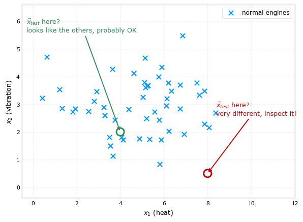
Anomaly Detection
machine-learning
unsupervised-learning
Density estimation with Gaussians to flag unusual examples: the full algorithm, evaluating it with a small labeled set, when to prefer it over supervised learning, and how to tune features.
After clustering, here is the second unsupervised learning algorithm of this course. An anomaly detection algorithm looks at an unlabeled dataset of normal events and thereby learns to detect, or to raise a red flag for, an unusual or anomalous event. This page builds the whole system: modeling the data with Gaussian distributions, the algorithm itself, how to evaluate and tune it with a small number of labeled anomalies, when to choose it over supervised learning, and how to choose good features for it.
Finding Unusual Events
Here is a motivating example. Some of Andrew Ng’s friends were working on using anomaly detection to detect possible problems with aircraft engines being manufactured. You really want a freshly made aircraft engine to be reliable, because an engine failure has very negative consequences, so it is worth checking whether an engine seems anomalous before it ships.
After an aircraft engine rolls off the assembly line, a number of features can be computed for it. Say feature \(x_1\) measures the heat generated by the engine and feature \(x_2\) measures the vibration intensity (real systems use additional features too, but two keeps the pictures simple). Aircraft engine manufacturers do not make many bad engines, so the easy data to collect is the features \(x_1\) and \(x_2\) of \(m\) engines that are probably just fine, normal engines rather than flawed ones.
The anomaly detection problem is: after the learning algorithm has seen these \(m\) examples of how engines typically behave, if a brand new engine rolls off the assembly line with feature vector \(\vec{x}_{test}\), does it look similar to the ones manufactured before? Is it probably okay, or is there something really weird about it that should make us inspect it even more carefully before it gets installed on an airplane?
If the new engine’s heat and vibration land in the middle of the cloud of previous engines, it looks very similar to the others, probably nothing to worry about. But if its signature lands far away from anything seen before, this looks like an anomaly, better inspect it more carefully before installing it on an airplane.
Density Estimation
The most common way to carry out anomaly detection is a technique called density estimation. Given the training set of \(m\) examples, the first thing to do is build a model for the probability of \(\vec{x}\). The learning algorithm tries to figure out which values of the features have high probability, and which values are less likely, that is, have a lower chance of being seen in the dataset. In the engine data, points in a small ellipse in the middle of the cloud are quite likely, points in a bigger ellipse around it a little less likely, points in an even bigger one less likely still, and points outside all of them are quite unlikely.
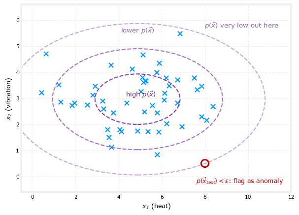
Having learned the model \(p(\vec{x})\), when the new test example \(\vec{x}_{test}\) arrives, compute its probability \(p(\vec{x}_{test})\) and compare it against some small threshold number, called epsilon (\(\varepsilon\)):
- If \(p(\vec{x}_{test}) < \varepsilon\), the value of \(\vec{x}_{test}\) is very unlikely relative to what has been seen before, so raise a flag, this could be an anomaly.
- If \(p(\vec{x}_{test}) \geq \varepsilon\), the example looks similar to previous ones, it looks okay, not an anomaly.
Examples near the middle of the data have high probability, so they pass, while an example far outside the cloud has very low probability, so it gets flagged. (How the regions of higher and lower probability actually get computed from the training set is exactly what the next sections build up.)
Applications of Anomaly Detection
Anomaly detection is one of those algorithms that is very widely used, even though people do not seem to talk about it that much.
- Fraud detection. If you run a website, let \(\vec{x}^{(i)}\) be the features of user \(i\)’s activities, such as how often they log in, how many pages they visit, how many transactions they make, how many posts they write, or their typing speed (some users type implausibly many characters per second). Modeling \(p(\vec{x})\) from data captures typical user behavior, and unusual users get a closer look. In the common workflow, an account is not automatically turned off just for looking anomalous; instead the security team takes a closer look, or extra checks kick in, such as asking the user to verify their identity with a phone number or pass a CAPTCHA to prove they are human. The same idea is used to spot financial fraud, an unusual pattern of purchases is well worth a careful review.
- Manufacturing. Beyond aircraft engines, many factories routinely use anomaly detection on whatever they just made, printed circuit boards, smartphones, motors, and more, to catch a unit that behaves strangely and deserves inspection before shipping to the customer.
- Monitoring computers in data centers. If \(\vec{x}^{(i)}\) holds features of machine \(i\), such as memory use, number of disk accesses per second, CPU load, network traffic, or even ratios like CPU load to network traffic, then a computer behaving very differently from the others may have a failing disk or network card, or may even have been hacked into.
Andrew Ng’s first commercial application of anomaly detection was helping a telco flag cell towers behaving unusually (so a technician could restore coverage sooner), and he has also used it for fraudulent financial transactions and for finding anomalous manufactured parts. It is a very useful tool to have in the tool chest, and to make it work, the first ingredient is a way to model \(p(\vec{x})\): the Gaussian distribution.
Review Questions
1. What kind of data does an anomaly detection algorithm learn from, and what question does it answer about a new example \(\vec{x}_{test}\)?
TipAnswer
It learns from an unlabeled dataset of \(m\) examples that are assumed to be normal events, like measurements from engines that are almost all fine. For a new example it answers: does \(\vec{x}_{test}\) look similar to the examples seen before, or is it unusual enough that it should be flagged for closer inspection?
1. What is density estimation, and how does the threshold \(\varepsilon\) turn it into an anomaly detector?
TipAnswer
Density estimation means building a model of \(p(\vec{x})\), which feature values have high probability of appearing in the dataset and which have low probability. The detector then computes \(p(\vec{x}_{test})\) for a new example and flags it as an anomaly if \(p(\vec{x}_{test}) < \varepsilon\), a small threshold; if \(p(\vec{x}_{test}) \geq \varepsilon\), the example is considered okay.
1. In fraud detection, why is an account usually not shut down automatically the moment it looks anomalous?
TipAnswer
Because a low \(p(\vec{x})\) only means the behavior is unusual, not proven fraudulent. The standard workflow routes the account to a security team for a closer look, or triggers additional checks such as identity verification via a phone number or a CAPTCHA, so that legitimate but atypical users are not wrongly cut off.
1. Which of the following are applications of anomaly detection mentioned here? (Choose all that apply.)
Flagging a freshly manufactured engine whose heat and vibration look unlike previous engines
Predicting tomorrow’s temperature from historical weather data
Spotting a data center machine whose behavior suggests a hardware failure or a hack
Finding fake accounts or unusual purchase patterns on a website
TipAnswer
a, c, and d. Predicting temperature (b) is a supervised regression problem with a known target to predict, not a matter of flagging unusual examples against a model of normal behavior.
The Gaussian Distribution
To apply anomaly detection, we need the Gaussian distribution, which is also called the normal distribution, the two names mean exactly the same thing, and the bell-shaped distribution refers to the same thing too. This is the very same distribution built up from scratch, with its own derivation of the formula below, in the probability course’s normal distribution page, so the summary here is a refresher of that page applied to a new problem, rather than a first introduction.
Say \(x\) is a number, and if \(x\) is a random number (sometimes called a random variable), it can take on random values. If the probability of \(x\) is given by a Gaussian distribution with mean parameter \(\mu\) and variance \(\sigma^2\), then \(p(x)\) looks like a bell-shaped curve. The center of the curve is at the mean \(\mu\), and the width of the curve is governed by \(\sigma\). Technically \(\sigma\) is called the standard deviation, and its square \(\sigma^2\) is called the variance of the distribution, exactly the variance from the probability course. The formula for the curve is
\[ p(x) = \frac{1}{\sqrt{2\pi}\,\sigma} \, e^{-\frac{(x - \mu)^2}{2\sigma^2}} \]
where \(\pi\) is 3.14159… (about \(22/7\), the ratio of a circle’s circumference to its diameter). For any given values of \(\mu\) and \(\sigma\), plotting this function of \(x\) gives the bell-shaped curve centered at \(\mu\) with width determined by \(\sigma\).
NoteSame distribution, different notation
The probability course writes this as \(X \sim N(\mu, \sigma^2)\) and calls the formula \(f(x)\), its probability density function. These machine learning notes write the same formula as \(p(x)\) instead of \(f(x)\), purely a notational habit of this field, nothing about the distribution itself changes. Setting \(\mu = 0\) and \(\sigma = 1\) here gives the same standard normal distribution covered there, and the same standardization trick, \(z = \frac{x - \mu}{\sigma}\), reappears below as the term inside the exponent.
NoteWhat does \(p(x)\) really mean?
One way to interpret it: if you drew, say, 100 numbers from this probability distribution and plotted a histogram of them, the histogram would look vaguely bell-shaped. The curve itself is what the histogram becomes with not 100 or a million but a practically infinite number of draws sorted into very fine histogram bins.
Here is how different choices of \(\mu\) and \(\sigma\) affect the curve.
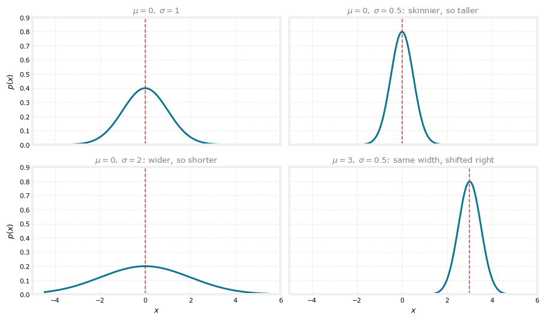
Probabilities always have to sum to one, so the area under the curve is always equal to 1. That is why when the Gaussian becomes skinnier (smaller \(\sigma\)) it has to become taller, and when it becomes wider (larger \(\sigma\)) it becomes shorter. Changing \(\mu\) moves the center without changing the width.
Estimating the Parameters from Data
Applying this to anomaly detection means going in the other direction: given a dataset of \(m\) examples where each \(x^{(i)}\) is a number, find a good choice of \(\mu\) and \(\sigma^2\) so that the Gaussian looks like a plausible source of the data. The estimates are
\[ \mu = \frac{1}{m} \sum_{i=1}^{m} x^{(i)} \qquad\qquad \sigma^2 = \frac{1}{m} \sum_{i=1}^{m} \left(x^{(i)} - \mu\right)^2 \]
that is, \(\mu\) is just the average of the training examples, and \(\sigma^2\) is the average of the squared differences between the examples and that \(\mu\).
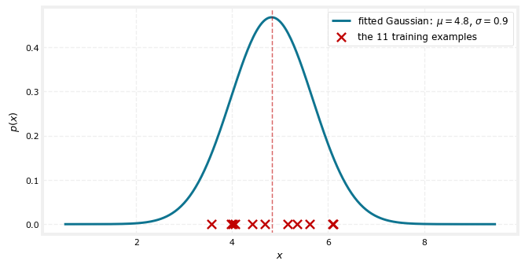
Implementing those two formulas in code produces a Gaussian centered on the data with a matching spread, a distribution the 11 training examples plausibly might have been drawn from.
Note\(\frac{1}{m}\) or \(\frac{1}{m-1}\)?
These two formulas have a name: they are the maximum likelihood estimates (MLE) of \(\mu\) and \(\sigma^2\), worked out from scratch, including exactly why the MLE for the mean always lands on the sample average, on the statistics course’s MLE page. That page’s Gaussian example is this same \(\hat\mu = \frac{1}{m}\sum x^{(i)}\) formula, just derived rather than stated.
The variance formula is where a subtlety hides. Dividing by \(m\), as done here, is what MLE actually gives, but it is a biased estimate of the true population variance, it tends to run a little low, because it measures spread around \(\mu\)’s own estimate \(\hat\mu\) rather than the true unknown \(\mu\). The sample variance page derives that bias concretely and introduces Bessel’s correction, dividing by \(m - 1\) instead, as the fix. So the two conventions are not arbitrary alternatives, \(\frac{1}{m}\) is what MLE produces and what these notes (like the course) always use, while \(\frac{1}{m-1}\) is the bias-corrected version some statistics classes prefer. As that page also notes, once \(m\) is reasonably large the two barely differ, dividing by 1,000 versus 999 changes almost nothing, which is exactly why it makes very little difference in practice here. If none of that rings a bell, don’t worry about it.
You can probably guess what comes next. An example landing near the peak of the fitted curve has high \(p(x)\), okay, not really anomalous, a lot like the others. An example far in the tail has much lower \(p(x)\), the height of the curve there is small, so it is pretty unusual compared to the examples seen, and therefore more anomalous.
So far this handles \(x\) being a single number, as if there were only one feature. Practical anomaly detection applications usually have many features, two, three, or a much larger number \(n\). The next section takes what a single Gaussian does and uses it to build the full algorithm that handles multiple features.
Review Questions
1. Write the formula for the Gaussian distribution and say what \(\mu\) and \(\sigma\) control about the curve’s shape.
TipAnswer
\[p(x) = \frac{1}{\sqrt{2\pi}\,\sigma} \, e^{-\frac{(x-\mu)^2}{2\sigma^2}}\] The mean \(\mu\) sets the center of the bell-shaped curve, and the standard deviation \(\sigma\) sets its width; \(\sigma^2\) is called the variance. Changing \(\mu\) slides the curve left or right without changing its shape.
1. Why does the Gaussian get taller when \(\sigma\) shrinks?
TipAnswer
Because probabilities must sum to one, the area under the curve always equals 1. Squeezing the curve narrower removes area from the sides, so the peak has to rise to keep the total area the same; likewise a wider curve must be shorter.
1. Given training examples \(x^{(1)}, \dots, x^{(m)}\), how are \(\mu\) and \(\sigma^2\) estimated?
TipAnswer
\(\mu = \frac{1}{m}\sum_{i=1}^{m} x^{(i)}\), the plain average of the examples, and \(\sigma^2 = \frac{1}{m}\sum_{i=1}^{m}(x^{(i)} - \mu)^2\), the average squared difference from that mean. These are the maximum likelihood estimates; dividing by \(m-1\) instead of \(m\) (as some statistics courses prefer) makes very little practical difference.
1. After fitting a Gaussian to the data, how does the height of the curve at a point relate to whether that point is anomalous?
TipAnswer
The curve’s height at \(x\) is \(p(x)\). Near the center of the fitted Gaussian the height is large, so examples there are considered normal. Far out in the tails the height is small, meaning such values were rarely (if ever) seen in training, so an example there is much more likely to be flagged as an anomaly.
The Anomaly Detection Algorithm
Now that the Gaussian handles a single number, here is the anomaly detection algorithm for a training set \(\vec{x}^{(1)}\) through \(\vec{x}^{(m)}\) where each example has \(n\) features, so each \(\vec{x}^{(i)}\) is a vector of \(n\) numbers. In the aircraft engine example, heat and vibration give \(n = 2\), but for many practical applications \(n\) can be dozens or even hundreds of features.
Given this training set, density estimation means building a model for \(p(\vec{x})\), the probability of any given feature vector. The model is the product of a Gaussian for each feature:
\[ p(\vec{x}) = p(x_1; \mu_1, \sigma_1^2) \times p(x_2; \mu_2, \sigma_2^2) \times p(x_3; \mu_3, \sigma_3^2) \times \cdots \times p(x_n; \mu_n, \sigma_n^2) \]
Each feature \(x_j\) gets its own two parameters, \(\mu_j\) and \(\sigma_j^2\), the mean and variance of that feature. In the engine example, \(\mu_1, \sigma_1^2\) describe the heat feature and \(\mu_2, \sigma_2^2\) describe the totally different vibration feature.
NoteWhy multiply probabilities?
Here is one example to build intuition. Suppose there is a \(\frac{1}{10}\) chance that an engine runs unusually hot, and a \(\frac{1}{20}\) chance that it vibrates really hard. What is the chance that it runs really hot and vibrates really hard? The model says \(\frac{1}{10} \times \frac{1}{20} = \frac{1}{200}\), it is really unlikely to get an engine with both problems at once.
Statistically minded readers may recognize that this multiplication assumes the features \(x_1, \dots, x_n\) are statistically independent. It turns out the algorithm often works fine even when the features are not actually independent, and understanding statistical independence is not needed to use anomaly detection effectively.
A more compact way to write the product uses the symbol \(\prod\), which is a lot like the summation symbol \(\sum\) except it means multiplying the terms rather than adding them:
\[ p(\vec{x}) = \prod_{j=1}^{n} p(x_j; \mu_j, \sigma_j^2) \]
The Full Algorithm
Putting it all together:
NoteAlgorithm summary
- Choose features \(x_j\) that you think might be indicative of anomalous examples.
- Fit the parameters \(\mu_1, \dots, \mu_n\) and \(\sigma_1^2, \dots, \sigma_n^2\): \[ \mu_j = \frac{1}{m} \sum_{i=1}^{m} x_j^{(i)} \qquad\qquad \sigma_j^2 = \frac{1}{m} \sum_{i=1}^{m} \left(x_j^{(i)} - \mu_j\right)^2 \] (In a vectorized implementation, \(\vec{\mu} = \frac{1}{m}\sum_{i=1}^{m} \vec{x}^{(i)}\) computes all the means at once.)
- Given a new example \(\vec{x}\), compute \[ p(\vec{x}) = \prod_{j=1}^{n} p(x_j; \mu_j, \sigma_j^2) = \prod_{j=1}^{n} \frac{1}{\sqrt{2\pi}\,\sigma_j} \exp\!\left(-\frac{(x_j - \mu_j)^2}{2\sigma_j^2}\right) \]
- Flag as an anomaly if \(p(\vec{x}) < \varepsilon\).
Note that fitting happens on the unlabeled training set, estimating these parameters is all the “training” there is.
The intuition behind what this algorithm does: it tends to flag an example as anomalous if one or more of its features is either very large or very small relative to what the training set showed. Each feature \(x_j\) gets its own fitted Gaussian, and if even one feature of the new example lands way out in the tail of its Gaussian, that factor \(p(x_j; \mu_j, \sigma_j^2)\) is very small, and one very small term in the product drags the whole product down, making \(p(\vec{x})\) small. The algorithm is a systematic way of quantifying whether a new example \(\vec{x}\) has any features that are unusually large or unusually small.
A Worked Example
Back to the engine dataset, where feature \(x_1\) takes on a much larger range of values than feature \(x_2\). Fitting the parameters on this data gives approximately \(\mu_1 \approx 4.9\) and \(\sigma_1 \approx 2.0\) for the heat feature, and \(\mu_2 \approx 3.0\) and \(\sigma_2 \approx 1.0\) for the vibration feature, one wider Gaussian and one narrower one.
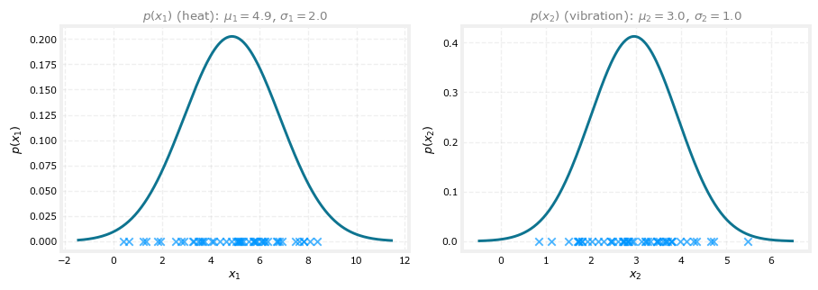
Multiplying \(p(x_1)\) and \(p(x_2)\) gives a 3D surface for \(p(\vec{x})\), where at any point the height of the surface is the product of the two Gaussian values for the corresponding \(x_1\) and \(x_2\). The surface is high near the middle of the training data, values there are more likely, and falls toward zero far away, values out there have a much lower chance.
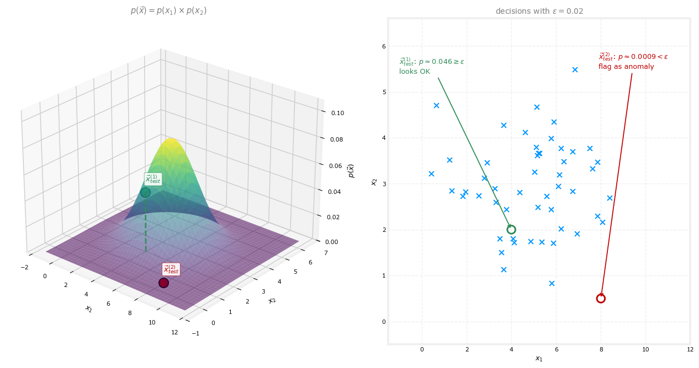
Now pick the threshold \(\varepsilon = 0.02\) and check two test examples. The first, \(\vec{x}_{test}^{(1)} = (4, 2)\), sits inside the cloud of training points, and computing the product of the two Gaussians gives \(p \approx 0.046\), much bigger than \(\varepsilon\), so the algorithm says this looks okay, not an anomaly. The second, \(\vec{x}_{test}^{(2)} = (8, 0.5)\), has an unusually low vibration value for its heat, and \(p\) comes out around \(0.0009\), much smaller than \(\varepsilon\), so the algorithm flags it as a likely anomaly. Pretty much as you would hope: the point that looks normal passes, and the point much further from anything in the training set gets flagged.
That is the process of building an anomaly detection system. But how do you choose the parameter \(\varepsilon\)? And how do you know whether the system is working well? That is next.
Review Questions
1. Write the model \(p(\vec{x})\) for an example with \(n\) features. What assumption does the formula correspond to, and does the assumption have to hold?
TipAnswer
\[p(\vec{x}) = \prod_{j=1}^{n} p(x_j; \mu_j, \sigma_j^2)\] the product of a separate Gaussian for each feature, each with its own mean \(\mu_j\) and variance \(\sigma_j^2\). Multiplying the per-feature probabilities corresponds to assuming the features are statistically independent, but in practice the algorithm often works fine even when they are not.
1. An engine has a \(\frac{1}{10}\) chance of running unusually hot and a \(\frac{1}{20}\) chance of vibrating really hard. Under the model, what is the chance of both at once, and what does this illustrate?
TipAnswer
\(\frac{1}{10} \times \frac{1}{20} = \frac{1}{200}\). It illustrates why the model multiplies per-feature probabilities: an example that is unusual in several features simultaneously is far less likely than one unusual in any single feature, so its \(p(\vec{x})\) ends up very small.
1. Why does having just one feature far out in the tail of its Gaussian cause the whole example to be flagged?
TipAnswer
Because \(p(\vec{x})\) is a product of the per-feature probabilities. A feature way out in the tail contributes a factor \(p(x_j; \mu_j, \sigma_j^2)\) that is very close to zero, and multiplying anything by a near-zero factor makes the whole product near zero, so \(p(\vec{x}) < \varepsilon\) and the example is flagged. This is exactly the intended behavior: flag examples with any unusually large or unusually small feature.
1. In the worked example with \(\varepsilon = 0.02\), the two test points had \(p \approx 0.046\) and \(p \approx 0.0009\). What does the algorithm conclude for each?
TipAnswer
The first, with \(0.046 \geq \varepsilon\), is judged okay, its features look similar to the training engines. The second, with \(0.0009 < \varepsilon\), gets flagged as a likely anomaly, its combination of high heat and very low vibration is far from anything in the training set.
1. Anomaly detection flags a new input \(\vec{x}\) as an anomaly if \(p(\vec{x}) < \varepsilon\). If we reduce the value of \(\varepsilon\), what happens?
The algorithm is more likely to classify new examples as an anomaly.
The algorithm is less likely to classify new examples as an anomaly.
The algorithm is more likely to classify some examples as an anomaly, and less likely to classify some examples as an anomaly. It depends on the example \(\vec{x}\).
The algorithm will automatically choose parameters \(\mu\) and \(\sigma\) to decrease \(p(\vec{x})\) and compensate.
TipAnswer
b. Shrinking \(\varepsilon\) shrinks the region “\(p(\vec{x}) < \varepsilon\)” that counts as anomalous, a probability now has to be even smaller to clear the bar, so fewer examples qualify. Every example’s \(p(\vec{x})\) stays exactly what it was, \(\varepsilon\) is a threshold the algorithm compares against, not a parameter that reshapes the fitted Gaussians (ruling out d), and the direction of the effect, more anomalies flagged or fewer, is the same for every example, not example-dependent (ruling out c).
1. You fit Gaussians to 100 aircraft engines’ temperature and vibration measurements, and read off \(p(x_1) = 0.0738\) for a new engine’s temperature (\(x_1 = 17.5\)) and \(p(x_2) = 0.02288\) for its vibration (\(x_2 = 48\)). What is \(p(\vec{x})\) for this engine?
\(0.0738 \times 0.02288 = 0.00169\)
\(17.5 + 48 = 65.5\)
\(0.0738 + 0.02288 = 0.0966\)
\(17.5 \times 48 = 840\)
TipAnswer
a. The model is \(p(\vec{x}) = p(x_1) \times p(x_2)\), the product of the two per-feature densities, so \(0.0738 \times 0.02288 \approx 0.00169\). The other options either operate on the raw feature values \(17.5\) and \(48\) instead of their probabilities, or add the two densities instead of multiplying them, neither of which is what the model computes.
Developing and Evaluating an Anomaly Detection System
Here are some practical tips for building one of these systems. A key idea: if you can evaluate the system as it is being developed, you can make decisions and improve it much more quickly. This is sometimes called real number evaluation: when you change the algorithm in some way, say change a feature or the value of \(\varepsilon\), having a way to compute a number that says whether it got better or worse makes it much easier to decide whether to keep the change. The same philosophy drove the model selection procedure with training, cross validation, and test sets in the supervised setting.
For anomaly detection this requires a small twist. Even though the discussion so far has been about unlabeled data, assume there is a small amount of labeled data available: a small number of previously observed anomalies. Maybe after making aircraft engines for a few years, a few anomalous engines have turned up. Label known anomalies \(y = 1\) and examples believed normal \(y = 0\). Then:
- Training set \(\vec{x}^{(1)}, \dots, \vec{x}^{(m)}\): still unlabeled, all examples assumed normal (\(y = 0\)). If a couple of anomalous examples accidentally slip in, the algorithm will still usually do okay.
- Cross validation set and test set: each holds mostly normal examples along with a few known anomalies, that is, lots of \(y = 0\) and a few \(y = 1\). (Again, a mislabeled anomaly or two hiding among the \(y=0\) examples is tolerable in practice.)
Example Split for the Aircraft Engines
Say the factory has collected data from 10,000 good engines over the years, plus 20 flawed, anomalous engines. That tiny number of positives is typical; anomaly detection applications commonly work with anywhere from 2 to 50 known anomalies. One reasonable split:
- Training set: 6,000 good engines. Fit the Gaussians, that is, compute all the \(\mu_j, \sigma_j^2\), from these.
- Cross validation set: 2,000 good engines + 10 known anomalies. Check how many of the anomalies the algorithm correctly flags, and how many good engines it wrongly flags, and use that to tune \(\varepsilon\) (and to add, subtract, or tune features \(x_j\)).
- Test set: 2,000 good engines + 10 known anomalies. After all tuning is done, evaluate here for an honest measure of how the tuned system performs.
Notice that this is still primarily an unsupervised learning algorithm: the training set has no labels (or all labels assumed \(y = 0\)), and fitting the Gaussians uses only that unlabeled data. The handful of labeled anomalies is used only for cross validation and testing, and it turns out to be very helpful for tuning.
NoteThe no-test-set alternative
When the number of known anomalies is very small, say only two flawed engines ever observed, a common alternative is to skip the test set: train on 6,000 good engines, and put the remaining 4,000 good engines plus all the anomalies into the cross validation set, tuning \(\varepsilon\) and the features against that. The downside is that with no test set, there is no fair way to tell how the system will do on future examples, and a higher risk that the choices of \(\varepsilon\) and features have overfit the cross validation set, so real-world performance may disappoint. But when the data is this scarce, it may be the best available option, and it is done quite often.
Evaluating on the Cross Validation or Test Set
Concretely, first fit the model \(p(\vec{x})\) on the training set. Then, for each cross validation or test example \(\vec{x}\), predict a label and compare it against the true label, and use that comparison to tune \(\varepsilon\).
NoteAlgorithm evaluation
Fit model \(p(\vec{x})\) on training set \(\vec{x}^{(1)}, \vec{x}^{(2)}, \dots, \vec{x}^{(m)}\).
On a cross validation/test example \(\vec{x}\), predict
\[ y = \begin{cases} 1 & \text{if } p(\vec{x}) < \varepsilon \quad (\text{anomaly}) \\ 0 & \text{if } p(\vec{x}) \geq \varepsilon \quad (\text{normal}) \end{cases} \]
Possible evaluation metrics:
- True positive, false positive, false negative, true negative
- Precision/Recall
- F₁-score
Use the cross validation set to choose the parameter \(\varepsilon\).
Using counts and rates instead of plain accuracy matters here because these datasets are highly skewed, maybe 10 positive examples against 2,000 negative ones (matching the 10-anomaly, 2,000-good-engine cross validation set from the split above), so plain classification accuracy is misleading, always predicting “normal” would score 99.5% and look great while catching zero anomalies. The section on skewed datasets covered the better tools for exactly this situation: true/false positive and negative counts, precision, recall, and the F₁ score. Those metrics apply directly here to measure how well the algorithm finds the small handful of anomalies amid the much larger set of normal examples, and trying a few different values of \(\varepsilon\) and picking whichever gives the best F₁ score (or whichever trade-off of precision and recall fits the application) on the cross validation set is exactly how \(\varepsilon\) gets tuned in practice. Even without computing the formal metrics, the essential intuition is to look at how many anomalies the algorithm catches and how many good engines it wrongly flags, and use that trade-off to pick a good \(\varepsilon\).
This does raise a question. If a few labeled examples are available anyway, why keep using an unsupervised algorithm at all, why not use those labels with a supervised learning algorithm instead? The comparison is next.
Review Questions
1. What is real number evaluation, and why does it speed up development?
TipAnswer
It means having a way to compute a single number that measures how well the current system performs, so that after any change, a tweaked feature, a different \(\varepsilon\), you can immediately see whether the change made things better or worse. Decisions about keeping or reverting changes then become quick comparisons instead of guesswork.
1. In the 10,000-good / 20-flawed engine example, describe the recommended three-way split and what each subset is used for.
TipAnswer
Training set: 6,000 good engines, used to fit the Gaussian parameters \(\mu_j, \sigma_j^2\) (no labels needed). Cross validation set: 2,000 good + 10 known anomalies, used to tune \(\varepsilon\) and the choice of features by checking which anomalies get flagged and how many good engines get falsely flagged. Test set: the other 2,000 good + 10 anomalies, used once at the end for a fair estimate of real-world performance.
1. Why is the system still considered primarily unsupervised even though labeled anomalies appear in the evaluation sets?
TipAnswer
Because the actual learning, fitting \(p(\vec{x})\) by estimating the Gaussian parameters, happens on the unlabeled training set alone, where every example is just assumed normal. The labeled anomalies never enter the model fitting; they are used only to evaluate the model on the cross validation and test sets and to tune \(\varepsilon\) and the features.
1. When is it reasonable to drop the test set entirely, and what risk does that create?
TipAnswer
When there are extremely few known anomalies (say, two), too few to populate both a cross validation and a test set, so all of them go into a single cross validation set used for tuning. The risk is overfitting the tuning decisions (\(\varepsilon\), feature choices) to that one set, with no fair way left to estimate performance on future data, so real-world results may be worse than expected.
1. Say you have 5,000 examples of normal airplane engines, and 15 examples of anomalous engines. How would you use the 15 examples of anomalous engines to evaluate your anomaly detection algorithm?
You cannot evaluate an anomaly detection algorithm because it is an unsupervised learning algorithm.
Put the data of anomalous engines (together with some normal engines) in the cross-validation and/or test sets to measure if the learned model can correctly detect anomalous engines.
Because you have data of both normal and anomalous engines, don’t use anomaly detection. Use supervised learning instead.
Use it during training by fitting one Gaussian model to the normal engines, and a different Gaussian model to the anomalous engines.
TipAnswer
b. This is exactly the aircraft-engine split worked through above: the bulk of the normal engines go into the unlabeled training set to fit \(p(\vec{x})\), while the small number of known anomalies, together with a slice of normal engines, go into the cross validation and test sets, where the labels get used to tune \(\varepsilon\) and to measure how well the algorithm actually catches anomalies. (a) is wrong because unsupervised training does not preclude a labeled evaluation step; (c) throws away good data, 15 positives is exactly the small-count regime where anomaly detection is favored over supervised learning; and (d) misunderstands the algorithm, only one Gaussian model, fit to the normal data, is ever used, anomalies are never fitted to a distribution of their own.
Anomaly Detection versus Supervised Learning
With a few positive examples (\(y = 1\)) and a large number of negative examples (\(y = 0\)) in hand, when should you use anomaly detection, and when supervised learning? The decision is actually quite subtle in some applications, but there are useful rules of thumb.
Anomaly detection is typically the more appropriate choice when there is a very small number of positive examples, 0 to 20 is not uncommon, alongside a relatively large number of negative examples. Recall that the parameters of \(p(\vec{x})\) are learned only from the negative examples, and the precious positives are spent on the cross validation and test sets for tuning and evaluation. Supervised learning, in contrast, becomes more applicable with a larger number of both positive and negative examples.
But the deeper difference is in what each approach assumes about future positives:
- Anomaly detection fits a model of what normal examples look like and flags anything that deviates a lot from normal. That works even if tomorrow brings a brand new way for something to go wrong that looks nothing like any anomaly seen so far. When there are many different types of anomalies, 20 positive examples cannot cover all the ways an aircraft engine could fail, this is the right mindset.
- Supervised learning looks at the positive examples it has and tries to decide whether a future example is similar to those. It assumes future positives will resemble the ones in the training set, and with enough positives, that assumption pays off.
A pair of contrasting examples makes it concrete. Financial fraud keeps evolving, new and unique forms of fraud appear every few months, so anomaly detection is often used to catch anything different from transactions seen in the past. Email spam, on the other hand, stays thematically similar over the years, spam keeps trying to sell similar things and send people to similar websites, so the spam arriving in the next few days looks a lot like past spam, and supervised learning works well.
| Anomaly detection | Supervised learning | |
|---|---|---|
| Positive examples | Very small number (often 0–20), used only for cross validation and testing | Large enough number for the algorithm to learn what positives look like |
| Assumption about future positives | May look nothing like any positive seen so far | Likely to be similar to positives in the training set |
| Typical applications | New, previously unseen forms of fraud; unseen manufacturing defects; monitoring machines in a data center; security applications | Email spam; known, recurring defects (e.g. scratched phone cases); weather prediction; disease diagnosis from symptoms |
A few notes on the applications row. Manufacturing uses both: anomaly detection to find new, previously unseen defects (a brand new failure mode in an aircraft engine), and supervised learning to find known, previously seen defects, for instance a smartphone maker whose case-making machine occasionally scratches covers can collect plenty of labeled scratched-phone examples and train a supervised system to spot more scratches. Security-related applications lean heavily toward anomaly detection, because hackers keep finding brand new ways into systems, a hacked machine in a data center can behave differently in a way never seen before. Weather prediction is supervised because the same handful of output labels (sunny, rainy, snow) recur over and over, and likewise diagnosing a known disease from patient symptoms is a supervised task.
Review Questions
1. Give the rule of thumb, based on counts of positive and negative examples, for choosing between the two approaches.
TipAnswer
With a very small number of positive examples, often between 0 and 20, and a comparatively large number of negatives, lean toward anomaly detection, which learns \(p(\vec{x})\) from the negatives and reserves the positives for tuning and evaluation. With a large number of both positives and negatives, supervised learning becomes the more applicable choice.
1. Beyond the counts, what is the key conceptual difference in how the two approaches treat future positive examples?
TipAnswer
Anomaly detection models what normal looks like and flags large deviations, so it can catch failure modes that have never been seen before. Supervised learning learns what past positives look like and asks whether a new example resembles them, so it excels when future positives repeat the patterns of past ones and struggles with genuinely novel ones.
1. Why is fraud detection commonly handled with anomaly detection while email spam is handled with supervised learning?
TipAnswer
New and unique forms of financial fraud keep appearing every few months, so a system must flag behavior unlike anything seen before, which is what anomaly detection does. Spam, by contrast, remains similar over the years, selling similar things and linking to similar sites, so tomorrow’s spam resembles yesterday’s labeled spam and a supervised classifier trained on past examples works well.
1. A smartphone factory wants to catch (i) scratched cases, a defect it sees every week, and (ii) whatever brand-new malfunction might appear next. Which tool fits each task?
TipAnswer
- Supervised learning: scratches recur constantly, so plenty of labeled positive examples exist and future scratches look like past ones. (ii) Anomaly detection: a never-before-seen malfunction has no training examples by definition, so the system must instead notice that a unit deviates from normal behavior.
1. You are building a system to detect if computers in a data center are malfunctioning. You have 10,000 data points of computers functioning well, and no data from computers malfunctioning. What type of algorithm should you use?
Anomaly detection
Supervised learning
TipAnswer
a. Anomaly detection. With zero examples of a malfunctioning computer, there is nothing for a supervised algorithm to learn positives from. Anomaly detection fits \(p(\vec{x})\) to the 10,000 normal machines alone and flags anything that deviates enough from that, exactly the very-small-positive-count regime (here, zero) where anomaly detection is the appropriate tool.
1. Same setup, but now you have 10,000 data points of computers functioning well, and 10,000 data points of computers malfunctioning. What type of algorithm should you use?
Anomaly detection
Supervised learning
TipAnswer
b. Supervised learning. Now there is a large, roughly balanced set of both classes, plenty of malfunctioning examples for a supervised algorithm to learn what a malfunction actually looks like directly, rather than only having examples of normal behavior to model. This is the large-positive-count regime described above, where supervised learning becomes the more applicable choice.
Choosing What Features to Use
When building an anomaly detection algorithm, choosing a good set of features turns out to be really important, more so than in supervised learning. In supervised learning, imperfect features are often tolerable: the labels \(y\) give the algorithm enough signal to figure out which features to ignore or how to rescale them. Anomaly detection learns from unlabeled data only, so it has no such help, features that don’t behave make it genuinely harder for the algorithm. Two practices help a lot: making the features more Gaussian, and error analysis.
Make the Features More Gaussian
Since each feature gets modeled by a Gaussian, the model fits best when the feature’s values actually look roughly Gaussian. So plot a histogram of each feature (plt.hist(x, bins=50)). If it looks like a symmetric bell, good, keep the feature as is. If it looks strongly skewed, not at all bell-shaped, consider transforming the feature into something more Gaussian. Common transformations:
- \(\log(x)\), or \(\log(x + c)\) for some constant \(c\)
- \(\sqrt{x}\), which is \(x^{0.5}\), or other powers like \(x^{0.4}\) or \(x^{1/3}\)
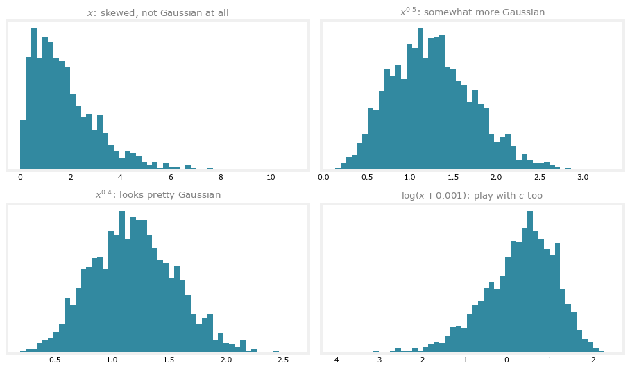
This exploration is fast to do in a Jupyter notebook: plot the histogram, try an exponent, look, adjust, in the demo above, \(x^{0.5}\) helps and \(x^{0.4}\) looks pretty Gaussian, so you would set x = x**0.4 and use that transformed value in training. Two practical details from doing this live:
- \(\log(0)\) is negative infinity, so if a feature has zero values,
np.log(x)errors; the common trick is \(\log(x + c)\) with a tiny \(c\) like 0.001, and \(c\) itself is worth playing with, a larger \(c\) transforms the distribution less. - The machine learning literature has ways to automatically measure how close a distribution is to Gaussian, but in practice trying a few values by eye and picking what looks right works well for all practical purposes.
WarningTransform every set the same way
Whatever transformation gets applied to the training set must also be applied to the cross validation and test set data. Otherwise the tuned threshold and parameters are being evaluated against differently scaled features.
Error Analysis for Anomaly Detection
If the trained algorithm does not work well on the cross validation set, look at where it makes mistakes and let that inspire improvements. Recall the goal: \(p(\vec{x})\) large (at least \(\varepsilon\)) for normal examples and small (below \(\varepsilon\)) for anomalies. The most common problem in practice is that \(p(\vec{x})\) is comparable for both, typically, large for an anomaly that happens to look similar to the normal examples in the features it has.
Concretely, suppose a fraud-detection system uses \(x_1\) = number of transactions a user makes. A fraudulent user in the cross validation set might make a perfectly typical number of transactions, so their \(p(x_1)\) is high and the algorithm fails to flag them. What to do: look at that example and try to figure out what made a person notice it is an anomaly, and if some new feature \(x_2\) can capture that, say the account’s typing speed, which for this user is insanely fast, adding the feature lets the algorithm spot it.
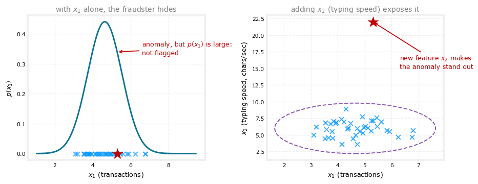
On the left, the anomalous user’s \(x_1\) value sits comfortably under the fitted Gaussian, so \(p(x_1)\) is high and nothing gets flagged. On the right, the new feature reveals a wildly anomalous typing speed, and with both features the fitted model assigns this point a very low probability, easy to detect. The development loop, then: train the model, see which cross validation anomalies it fails to detect, examine those examples, and let them inspire new features on which the anomaly takes unusually large or small values.
Combining Features
It is also not unusual to create new features by combining old ones. Take the data center monitoring example, starting with features like \(x_1\) = memory use, \(x_2\) = disk accesses per second, \(x_3\) = CPU load, and \(x_4\) = network traffic volume. Suppose one machine behaves very strangely, yet neither its CPU load nor its network traffic is unusual on its own, what is unusual is a really high CPU load combined with a very low network traffic volume. For a data center that streams videos, machines normally show high CPU with high traffic or low CPU with low traffic, but not that combination. Creating
\[ x_5 = \frac{\text{CPU load}}{\text{network traffic}} \]
gives a feature that takes an unusually large value on exactly that machine, so the algorithm can flag future examples like it. Variations like \(x_6 = \frac{(\text{CPU load})^2}{\text{network traffic}}\) are also fair game; play with different choices until \(p(\vec{x})\) stays large for the normal examples but becomes small for the anomalies in the cross validation set.
That completes anomaly detection, and with clustering, both unsupervised learning topics of the course: algorithms that many companies use today in important commercial applications, learned from unlabeled data. The next part of these notes turns to recommender systems, the algorithms behind websites that recommend products or movies. They are among the most commercially important algorithms in machine learning, moving enormous value around while getting talked about surprisingly little.
Review Questions
1. Why does the choice of features matter more for anomaly detection than for supervised learning?
TipAnswer
Supervised learning has labels \(y\), a supervisory signal that lets the algorithm learn to ignore irrelevant features or rescale them to best advantage. Anomaly detection learns from unlabeled data only, so it cannot figure out on its own which features to discount, and a poorly behaved feature directly distorts the model \(p(\vec{x})\).
1. A feature’s histogram is heavily skewed with a long right tail. Name three transformations worth trying, and one rule that must be respected afterward.
TipAnswer
Try \(\log(x + c)\) for some constant \(c\) (with \(c\) small like 0.001 if \(x\) can be zero, since \(\log(0)\) is undefined), \(\sqrt{x} = x^{0.5}\), or other fractional powers such as \(x^{0.4}\) or \(x^{1/3}\), adjusting the exponent or \(c\) until the histogram looks roughly bell-shaped. The rule: whatever transformation is applied to the training set must be applied identically to the cross validation and test sets.
1. What is the most common failure mode found during error analysis, and what is the standard remedy?
TipAnswer
The most common problem is that \(p(\vec{x})\) is large for an anomaly, comparable to the normal examples, because the anomaly looks typical on the existing features. The remedy is to examine that missed anomaly, identify what actually makes it unusual, and add a new feature that captures it, like typing speed for a fraudster whose transaction count looked normal, so the example takes an unusually large or small value on the new feature.
1. In the data center example, why does the ratio \(x_5 = \text{CPU load} / \text{network traffic}\) catch a machine that neither feature catches alone?
TipAnswer
The suspicious machine’s CPU load and network traffic are each individually within normal range, so their separate Gaussians assign them healthy probabilities. What is anomalous is the combination, high CPU while serving almost no traffic, and the ratio encodes that combination as a single number that becomes unusually large exactly in that case, letting the per-feature Gaussian model flag it.
Lab: Anomaly Detection
This lab implements the anomaly detection algorithm and applies it to detect failing servers on a network. It starts with a small, two-feature dataset to build intuition and check the fit visually, then reruns the exact same code on a harder, eleven-feature dataset where a scatter plot is no longer possible. The two graded functions are exactly the two steps of the algorithm, fitting the Gaussian parameters and choosing \(\varepsilon\).
import numpy as np
import matplotlib.pyplot as pltProblem Statement and Dataset
The dataset holds two features for each compute server, throughput (mb/s) and latency (ms) of its response. Training data \(X_{train}\) is unlabeled, mostly normal servers with a handful of anomalies mixed in, exactly the setup the main algorithm assumes. Alongside it are a small cross validation set \(X_{val}\) and its labels \(y_{val}\), where \(y = 1\) marks a known anomalous server, used for choosing \(\varepsilon\) exactly as the evaluation section described.
X_train = np.load("../../media/anomaly-detection/X_part1.npy")
X_val = np.load("../../media/anomaly-detection/X_val_part1.npy")
y_val = np.load("../../media/anomaly-detection/y_val_part1.npy")
print("First 5 elements of X_train:\n", X_train[:5])
print("First 5 elements of X_val:\n", X_val[:5])
print("First 5 elements of y_val:", y_val[:5])
print("Shapes:", X_train.shape, X_val.shape, y_val.shape)First 5 elements of X_train:
[[13.04681517 14.74115241]
[13.40852019 13.7632696 ]
[14.19591481 15.85318113]
[14.91470077 16.17425987]
[13.57669961 14.04284944]]
First 5 elements of X_val:
[[15.79025979 14.9210243 ]
[13.63961877 15.32995521]
[14.86589943 16.47386514]
[13.58467605 13.98930611]
[13.46404167 15.63533011]]
First 5 elements of y_val: [0 0 0 0 0]
Shapes: (307, 2) (307, 2) (307,)With only two features, the training set can be viewed directly as a scatter plot before doing anything else.
plt.figure(figsize=(6, 5))
plt.scatter(X_train[:, 0], X_train[:, 1], marker="x", s=32, color="#0096FF")
plt.title("the first dataset", fontsize=10.5, color="gray")
plt.xlabel("latency (ms)")
plt.ylabel("throughput (mb/s)")
plt.show()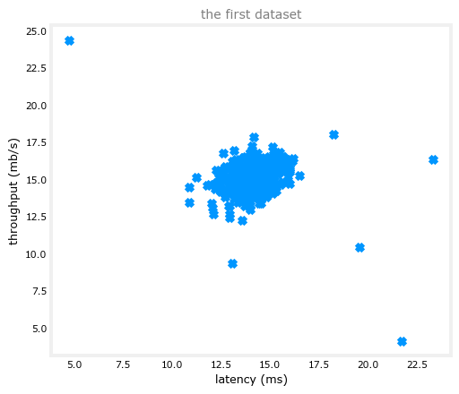
Most points cluster in one dense region, with a few points scattered further out, plausible anomaly candidates once a model of \(p(\vec{x})\) is in hand.
Exercise 1: Estimating the Gaussian Parameters
The first graded function, estimate_gaussian, computes mu and var, the mean and variance of every feature in X, exactly the two formulas already derived,
\[ \mu_i = \frac{1}{m}\sum_{j=1}^{m} x_i^{(j)} \qquad\qquad \sigma_i^2 = \frac{1}{m}\sum_{j=1}^{m}\left(x_i^{(j)} - \mu_i\right)^2 \]
applied here to each column \(i\) of the data matrix X at once with axis=0, instead of one feature at a time.
def estimate_gaussian(X):
"""
Calculates mean and variance of all features
in the dataset
Args:
X (ndarray): (m, n) Data matrix
Returns:
mu (ndarray): (n,) Mean of all features
var (ndarray): (n,) Variance of all features
"""
m, n = X.shape
mu = np.mean(X, axis=0)
var = np.mean((X - mu) ** 2, axis=0)
return mu, varmu, var = estimate_gaussian(X_train)
print("Mean of each feature:", mu)
print("Variance of each feature:", var)Mean of each feature: [14.11222578 14.99771051]
Variance of each feature: [1.83263141 1.70974533]The expected output is a mean of [14.11222578 14.99771051] and a variance of [1.83263141 1.70974533], and that is exactly what comes out.
With mu and var in hand, multivariate_gaussian below computes \(p(\vec{x})\) for every example at once. It is written in a more general matrix form that also supports correlated features (an off-diagonal covariance matrix), useful for datasets beyond this lab, but when var is a plain vector, as it is here, it gets turned into a diagonal covariance matrix on the first line, which makes it compute exactly the same product of independent per-feature Gaussians, \(p(\vec{x}) = \prod_{j=1}^{n} p(x_j; \mu_j, \sigma_j^2)\), seen earlier, just packaged as a single matrix expression instead of a loop.
def multivariate_gaussian(X, mu, var):
"""
Computes the probability density function of the examples X
under the multivariate Gaussian distribution with parameters
mu and var. If var is a matrix, it is treated as the covariance
matrix. If var is a vector, it is treated as the variances of
the features (a diagonal covariance matrix).
"""
k = len(mu)
if var.ndim == 1:
var = np.diag(var)
X = X - mu
p = (2 * np.pi) ** (-k / 2) * np.linalg.det(var) ** (-0.5) * \
np.exp(-0.5 * np.sum(np.matmul(X, np.linalg.pinv(var)) * X, axis=1))
return pPlotting the contours of this fitted distribution over the training data shows what the model actually learned.
def visualize_fit(X, mu, var):
"""Plots the training data with contour lines of the fitted Gaussian."""
x1, x2 = np.meshgrid(np.arange(0, 35.5, 0.5), np.arange(0, 35.5, 0.5))
Z = multivariate_gaussian(np.stack([x1.ravel(), x2.ravel()], axis=1), mu, var)
Z = Z.reshape(x1.shape)
plt.scatter(X[:, 0], X[:, 1], marker="x", s=32, color="#0096FF")
if np.sum(np.isinf(Z)) == 0:
plt.contour(x1, x2, Z, levels=10.0 ** np.arange(-20, 1, 3),
colors="#7030A0", linewidths=1)
plt.title("the Gaussian contours of the fitted distribution", fontsize=10.5, color="gray")
plt.xlabel("latency (ms)")
plt.ylabel("throughput (mb/s)")
p = multivariate_gaussian(X_train, mu, var)
plt.figure(figsize=(6, 5))
visualize_fit(X_train, mu, var)
plt.show()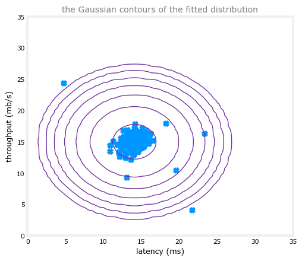
The innermost contour marks where \(p(\vec{x})\) is highest, and each ring further out marks a probability an order of magnitude lower, dropping all the way to \(10^{-20}\) at the outermost ring. Most training examples sit inside the first couple of contours, exactly the dense, high-probability region the model expects, while the handful of scattered points from the earlier plot now sit far outside every ring.
Exercise 2: Selecting the Threshold \(\varepsilon\)
Having the probabilities is not enough on its own, a threshold \(\varepsilon\) is still needed to decide low from high. The second graded function, select_threshold, finds a good \(\varepsilon\) using the cross validation set: it tries many candidate thresholds and keeps whichever gives the best \(F_1\) score, exactly the tuning procedure described earlier, now made concrete in code. Recall precision and recall,
\[ prec = \frac{tp}{tp + fp} \qquad\qquad rec = \frac{tp}{tp + fn} \]
where \(tp\), \(fp\), \(fn\) are the true positive, false positive, and false negative counts from comparing the predictions \(p(\vec{x}) < \varepsilon\) against the ground-truth labels \(y_{val}\), as covered for skewed datasets, and the \(F_1\) score combines them,
\[ F_1 = \frac{2 \cdot prec \cdot rec}{prec + rec} \]
The loop that sweeps over candidate values of \(\varepsilon\) is already provided; the graded part is computing predictions, tp, fp, fn, prec, rec, and F1 inside it.
def select_threshold(y_val, p_val):
"""
Finds the best threshold to use for selecting outliers
based on the results from a validation set (p_val)
and the ground truth (y_val)
Args:
y_val (ndarray): Ground truth on validation set
p_val (ndarray): Results on validation set
Returns:
epsilon (float): Threshold chosen
F1 (float): F1 score by choosing epsilon as threshold
"""
best_epsilon = 0
best_F1 = 0
F1 = 0
step_size = (max(p_val) - min(p_val)) / 1000
for epsilon in np.arange(min(p_val), max(p_val), step_size):
predictions = (p_val < epsilon)
tp = np.sum((predictions == 1) & (y_val == 1))
fp = np.sum((predictions == 1) & (y_val == 0))
fn = np.sum((predictions == 0) & (y_val == 1))
prec = tp / (tp + fp)
rec = tp / (tp + fn)
F1 = 2 * prec * rec / (prec + rec)
if F1 > best_F1:
best_F1 = F1
best_epsilon = epsilon
return best_epsilon, best_F1p_val = multivariate_gaussian(X_val, mu, var)
epsilon, F1 = select_threshold(y_val, p_val)
print("Best epsilon found using cross-validation: %e" % epsilon)
print("Best F1 on Cross Validation Set: %f" % F1)Best epsilon found using cross-validation: 8.990853e-05
Best F1 on Cross Validation Set: 0.875000/tmp/ipykernel_908917/3389176543.py:27: RuntimeWarning: invalid value encountered in scalar divide
prec = tp / (tp + fp)The expected output is an epsilon of about 8.99e-05 and an \(F_1\) score of 0.875, matching what runs here. Applying that threshold back to the training set and circling whichever points fall below it shows the anomalies the algorithm actually caught.
outliers = p < epsilon
print("Number of outliers found:", outliers.sum())
plt.figure(figsize=(6, 5))
visualize_fit(X_train, mu, var)
plt.plot(X_train[outliers, 0], X_train[outliers, 1], "o", markersize=10,
markerfacecolor="none", markeredgewidth=2, color="#C00000")
plt.title("anomalies (red circles) flagged at the tuned $\\varepsilon$",
fontsize=10.5, color="gray")
plt.show()Number of outliers found: 6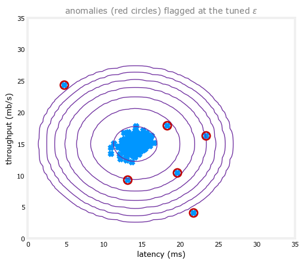
Six points get circled, all of them sitting out in the sparse, low-probability region well past the outermost contour, exactly the servers worth a closer look.
A Harder, High-Dimensional Dataset
The two-feature example makes the contours easy to see, but real servers expose far more than two measurements. The next dataset describes each server with 11 features instead of 2, capturing many more properties of the machine, at which point a scatter plot is no longer an option, yet nothing about the algorithm has to change. The same estimate_gaussian, the same multivariate_gaussian, and the same select_threshold apply unmodified.
X_train_high = np.load("../../media/anomaly-detection/X_part2.npy")
X_val_high = np.load("../../media/anomaly-detection/X_val_part2.npy")
y_val_high = np.load("../../media/anomaly-detection/y_val_part2.npy")
print("Shape of X_train_high:", X_train_high.shape)
print("Shape of X_val_high:", X_val_high.shape)
print("Shape of y_val_high:", y_val_high.shape)Shape of X_train_high: (1000, 11)
Shape of X_val_high: (100, 11)
Shape of y_val_high: (100,)# Estimate the Gaussian parameters
mu_high, var_high = estimate_gaussian(X_train_high)
# Evaluate the probabilities for the training set
p_high = multivariate_gaussian(X_train_high, mu_high, var_high)
# Evaluate the probabilities for the cross validation set
p_val_high = multivariate_gaussian(X_val_high, mu_high, var_high)
# Find the best threshold
epsilon_high, F1_high = select_threshold(y_val_high, p_val_high)
print("Best epsilon found using cross-validation: %e" % epsilon_high)
print("Best F1 on Cross Validation Set: %f" % F1_high)
print("# Anomalies found: %d" % sum(p_high < epsilon_high))Best epsilon found using cross-validation: 1.377229e-18
Best F1 on Cross Validation Set: 0.615385
# Anomalies found: 117/tmp/ipykernel_908917/3389176543.py:27: RuntimeWarning: invalid value encountered in scalar divide
prec = tp / (tp + fp)The expected output is an epsilon of about 1.38e-18, an \(F_1\) score of about 0.615, and 117 anomalies found among the 1,000 training servers, and that is exactly what this run produces too. The \(F_1\) score is noticeably lower than the two-feature case, harder, higher-dimensional data is a harder detection problem, but the same handful of lines of code, fitting one Gaussian per feature and sweeping \(\varepsilon\) against a small labeled validation set, scales up to it without any changes.
NoteDownload the lab data
The six arrays used in this lab: X_part1.npy, X_val_part1.npy, y_val_part1.npy for the two-feature server dataset, and X_part2.npy, X_val_part2.npy, y_val_part2.npy for the eleven-feature one.
Review Questions
1. estimate_gaussian computes mu and var with np.mean(X, axis=0) rather than looping over features one at a time. What does axis=0 buy here?
TipAnswer
X is an \((m, n)\) matrix, examples down the rows and features across the columns. Averaging with axis=0 collapses the row dimension, producing one mean per column, that is, one \(\mu_i\) per feature, in a single vectorized call instead of an explicit loop over the \(n\) features.
1. multivariate_gaussian starts by checking if var.ndim == 1 and converting var to np.diag(var). Why, and what does that have to do with the per-feature product formula from earlier in this page?
TipAnswer
estimate_gaussian returns var as a plain vector of \(n\) per-feature variances, but the general multivariate Gaussian formula expects a full \(n \times n\) covariance matrix. Placing those variances on the diagonal of an otherwise-zero matrix encodes “each feature has its own variance and no feature is correlated with any other,” which is precisely the independence assumption behind \(p(\vec{x}) = \prod_{j=1}^n p(x_j; \mu_j, \sigma_j^2)\). The matrix form computes that same product, just as one linear-algebra expression instead of a loop over features.
1. In select_threshold, why does the search try np.arange(min(p_val), max(p_val), step_size) rather than, say, trying every power of ten?
TipAnswer
A useful \(\varepsilon\) has to fall somewhere between the smallest and largest probability actually seen on the cross validation set, values outside that range would flag either everything or nothing as anomalous. Stepping evenly through that exact range in 1,000 increments is a simple, exhaustive way to sweep every meaningfully different threshold and score each one by \(F_1\), without having to guess the right scale in advance.
1. Moving from the 2-feature dataset to the 11-feature one, the best \(F_1\) score drops from 0.875 to about 0.615. Does that mean the code is buggy?
TipAnswer
Not necessarily. estimate_gaussian, multivariate_gaussian, and select_threshold are unchanged between the two runs, and the shapes and outputs match the expected values in both cases. A lower \(F_1\) on a harder, higher-dimensional, more realistic dataset is expected: with more features there are more ways for a normal example to look slightly unusual on some dimension, which makes drawing a clean line between normal and anomalous with a single Gaussian-per-feature model genuinely harder, not necessarily a sign of a bug.